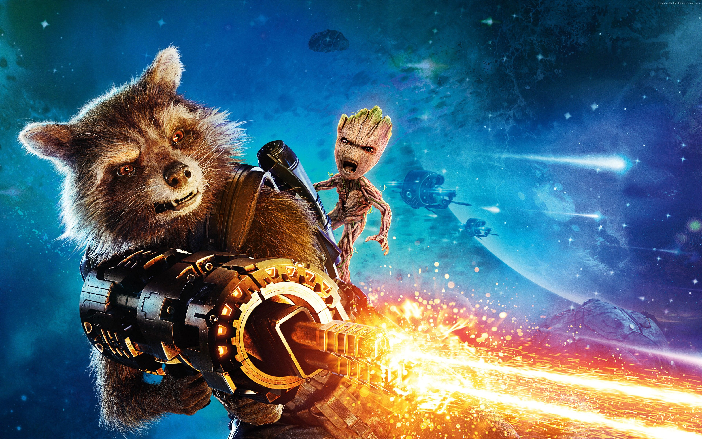

About Baby Groot
Baby Groot is so cute! He died saving his friends, but then survived! Baby Groot is an infant of Groot from the first Guardians of the Galaxy. He is a crucial member of the Guardians of the Galaxy. He brings joy and laughter and life would be sad and dull without him. He speeks in Groot language which mean all he says is, "I am Groot". Like many children he has some anger issues, but he also has a nice and sweet side to him. Groot is one of a kind, but don't be fooled by his puppy dog eyes, because he is small and mighty.
Baby Groot and his best friend Rocket Raccoon
Baby Groot's Characteristics
- He's a small dude
- Referred to as a "twig"
- He's an awesome dancer
Baby Groot's Friends
Baby Groot has some awesome friends. His best friend is Rocket Raccoon. At first, Groot's friends did not understand what he was saying, but as they became closer, they started to understand him. His friends may not always be the nicest to Groot, but he loves them just the same. Click on the links if you wanna explore the world of Groot's friends: